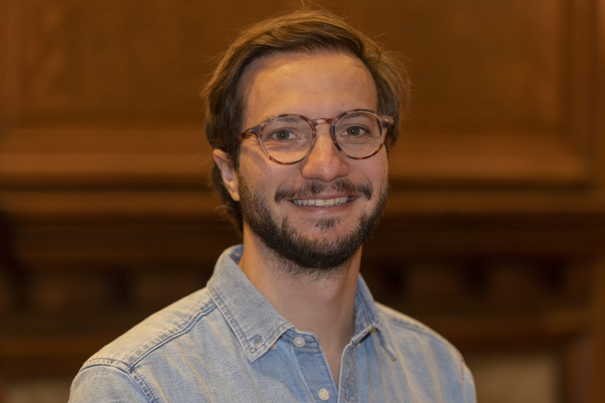

Alejandro Roemer
Why do governments facing criminal violence take on the political cost of reform?
I'm a PhD student in Political Science at the University of Chicago, working in comparative politics. I am interested in why and when governments confronting high-intensity criminal violence undertake costly political reforms such as creating independent prosecution offices. I also study how armed conflict is classified under international law, and the parallels between the War on Terror and the War on Drugs. I have a background in international law and public policy, and an interest in behavioral science.

fig. 1Criminal violence, the state, and the cost of reform
My work sits at the intersection of comparative politics and the law of armed conflict. I ask what happens to states' institutions, their use of force, and their politics when they confront entrenched criminal violence, with Latin America at the center of the inquiry.
Reform under violence
Why and when governments facing intense criminal violence take on costly reforms — independent prosecutors, fiscal and financial controls — that carry real political risk.
The use of force
How states regulate the use of force in the fight against organized crime in Latin America, and where law strains against the realities of security policy.
Conflict & international law
How armed conflict is classified under international law — and the uneasy parallels between the War on Terror and the War on Drugs.
My approach is comparative and historical, grounded in fieldwork, archival research, and close attention to how legal and political institutions actually change.
† This site grows alongside the dissertation. Expect the research section to sharpen as the project takes shape.
Selected writing
Essays and analysis for public audiences, in English and in Spanish. I have written on drug policy, the rule of law, the use of force, and the politics of the Americas. I also enjoy writing about philosophy and policymaking through cartoons and popular culture — check out my pieces on Stoicism and Existentialism in the Lion King, Seneca on Meritocracy, Victor Hugo on Guilt and Redemption, and Descartes as a Millennial.
Ongoing analysis lives on my Substack ↗
Ghosts of the War on Terror: Perils and Promise in US Drug Policy for Latin America read ↗
OPR Speaks with Former President of Colombia, Iván Duque read ↗
El acierto de Trump: la "alianza intolerable" entre el gobierno mexicano y el crimen organizado read ↗
Researchers: ShotSpotter helps gunshot victims receive rapid first aid. Does that change the debate? read ↗
Russia, Ukraine, and International Law: the return to wars of conquest read ↗
The Latin American Monument Debate: Reckoning with the Region's Colonial Past read ↗
Idealismo apático: marca generacional read ↗
Education & experience
PhD, Political Science
Master of Public Policy
MA, Human Rights & Humanitarian Action
BA, International Relations
Senior Research Fellow
Research Assistant, University of Chicago
Lecturer in International Humanitarian Law
Deputy Director, Analytics & Behavioral Economics
International House Fellow, University of Chicago (2025–26) · Pearson Institute Fellow, University of Chicago · Merit Scholarship, Master of Public Policy, University of Chicago · Premio de Investigación Ex-ITAM.
† The full CV — teaching, research assistantships, and the complete list of writing — is linked below.
Beyond the research
When I'm not reading about prosecutors and the use of force, I play recreational soccer, watch (and over-analyze) anime, and am slowly teaching myself guitar and songwriting.
Get in touch
Happy to hear from students, collaborators, and anyone working on similar questions.